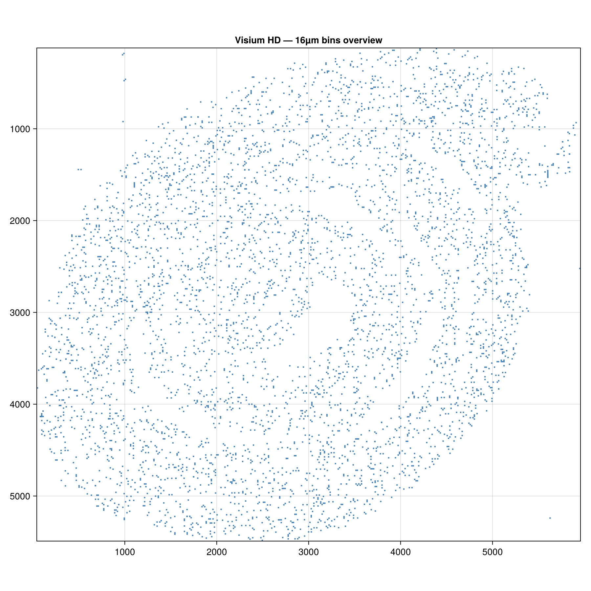
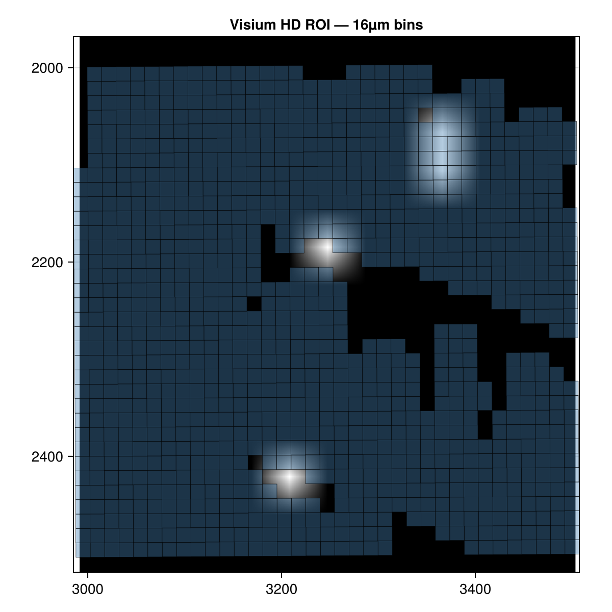

Visium HD spatial transcriptomics
This tutorial uses a full Visium HD dataset (~2.4 GB). The code is not run automatically — images below are pre-rendered and committed to the repository. To reproduce them locally, download the Visium and Xenium datasets and run test/make_fixtures.jl as described in the Creating a subset section.
About the dataset
The example dataset is the 10x Genomics Visium HD Mouse Small Intestine, distributed in a converted form by the SpatialData project as a Python-compatible OME-Zarr store. It contains:
- Square bin shapes at three resolutions: 2 µm, 8 µm, and 16 µm
- Four registered images: CytAssist scan, full-resolution H&E, high-resolution, and low-resolution
- Expression tables (one per bin resolution; AnnData format — not currently read by SpatialOmics)
Visium HD is a spot-based assay: rather than single-molecule transcripts, expression is aggregated into spatial bins (squares). The bin size controls the spatial resolution versus signal-to-noise trade-off — 2 µm bins are high resolution but sparse; 16 µm bins are noisier but better covered.
Download
Download the Visium HD example store from the SpatialData datasets page. Place the visium_ex.zarr directory at a convenient path:
visium_path = "/path/to/visium_ex.zarr"Load and inspect
using SpatialOmics
vis = read(SpatialDataZarr(), visium_path)
keys(elements(vis))
coord_systems(vis)The three bin-resolution shape layers share the same coordinate system but have very different element counts:
for name in ("Visium_HD_Mouse_Small_Intestine_square_002um",
"Visium_HD_Mouse_Small_Intestine_square_008um",
"Visium_HD_Mouse_Small_Intestine_square_016um")
shp = shapes(vis, name)
@info name length(geometries(shp))
endVisualise
using CairoMakie
# 16µm bins give a readable overview without millions of polygons
shp = shapes(vis, "Visium_HD_Mouse_Small_Intestine_square_016um")
n = length(geometries(shp))
idx = n > 5_000 ? rand(1:n, 5_000) : 1:n # subsample for the overview
fig = Figure(size=(900, 900))
ax = Axis(fig[1, 1]; aspect=DataAspect(), yreversed=true,
title="Visium HD — 16µm bins (subsampled)")
poly!(ax, SpatialShapes(geometries(shp)[idx]; instance_id=instance_id(shp)[idx],
coord_system=coord_system(shp));
color=:steelblue, strokewidth=0)
tightlimits!(ax)
fig
Explore a region
ext = SpatialExtent(2000.0, 2500.0, 1500.0, 2000.0; coord_system="global")
roi = view(vis, ext)
fig = Figure(size=(700, 700))
ax = Axis(fig[1, 1]; aspect=DataAspect(), yreversed=true,
xlabel="x (µm)", ylabel="y (µm)")
image!(ax, scaleminmax(channel(images(roi, "Visium_HD_Mouse_Small_Intestine_lowres_image"), 1)))
poly!(ax, shapes(roi, "Visium_HD_Mouse_Small_Intestine_square_016um");
color=(:steelblue, 0.35), strokewidth=0.3)
tightlimits!(ax)
fig
Creating a subset
The fixture at test/data/visium_small.zarr covers a patch of the small intestine at 16 µm bin resolution. Generate it with test/make_fixtures.jl; inspect the overview and update the region constants before rerunning when a different patch is needed:
julia --project=docs/heavy -e 'using Pkg; Pkg.instantiate()' # first use
julia --project=docs/heavy test/make_fixtures.jl /path/to/xenium_ex.zarr /path/to/visium_ex.zarr# Inspect visium_overview.png to pick a region, then fill in coordinates:
ext = SpatialExtent(VIS_XMIN, VIS_XMAX, VIS_YMIN, VIS_YMAX; coord_system="global")
roi = view(vis, ext)
sub = SpatialDataset()
sub["Visium_HD_Mouse_Small_Intestine_square_016um"] =
collect(shapes(roi, "Visium_HD_Mouse_Small_Intestine_square_016um"))
sub["Visium_HD_Mouse_Small_Intestine_lowres_image"] =
images(roi, "Visium_HD_Mouse_Small_Intestine_lowres_image")
save!(sub; path="test/data/visium_small.zarr")Working with the committed fixture
ds = read(SpatialDataZarr(), joinpath(pkgdir(SpatialOmics), "test", "data", "visium_small.zarr"))
shp = shapes(ds, "Visium_HD_Mouse_Small_Intestine_square_016um")
img = images(ds, "Visium_HD_Mouse_Small_Intestine_lowres_image")
@show length(geometries(shp))
@show size(data(img))